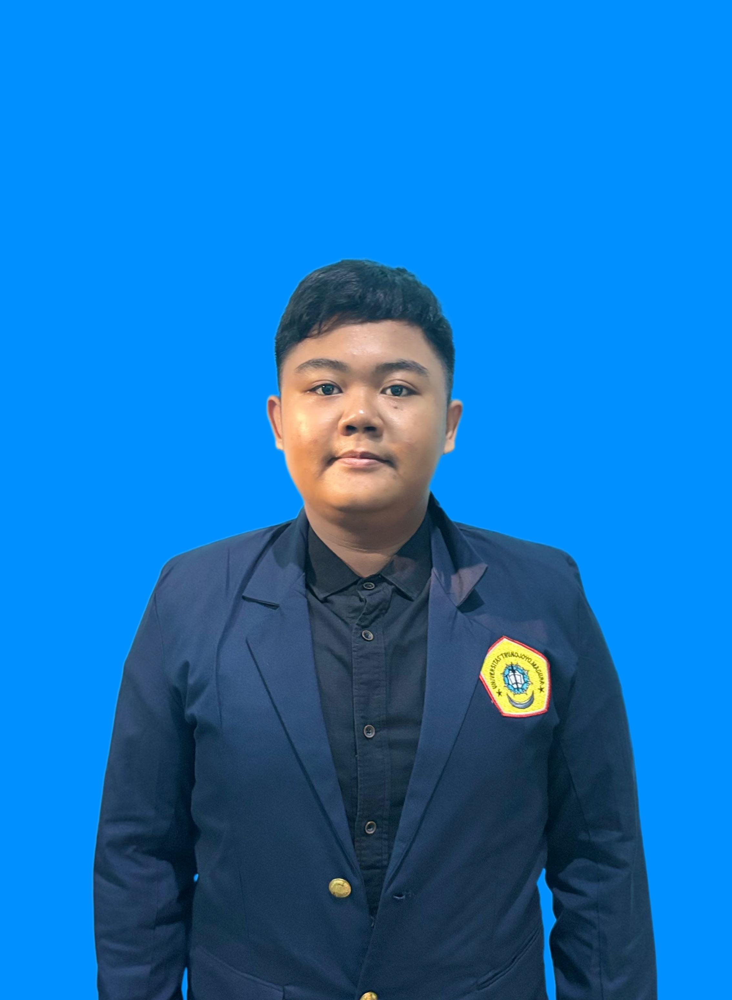

Saya adalah mahasiswa Universitas Trunojoyo Madura, Fakultas Teknik, Prodi Sistem Informasi. Saya memiliki minat di bidang teknologi. Saya mampu bekerja secara individu maupun tim serta memiliki semangat belajar yang tinggi.
Membuat website sederhana menggunakan HTML yang terdiri dari beberapa halaman seperti halaman Books, College, dan Curriculum Vitae. Website ini bertujuan untuk memahami struktur dasar HTML, navigasi antar halaman, dan pembuatan layout sederhana.
Mengembangkan website informasi tentang Honda Supra X 125 yang berisi spesifikasi, keunggulan, serta modifikasi motor. Project ini dibuat untuk melatih kemampuan dalam menyusun konten dan tampilan website yang informatif dan menarik.
Email: samuraigaming109@email.com
Instagram: @nanngg_06